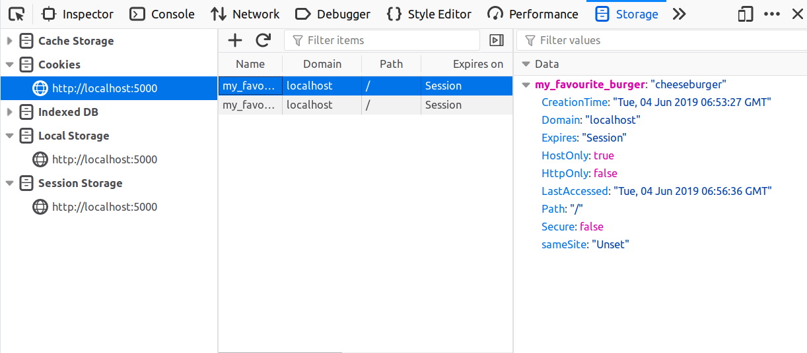
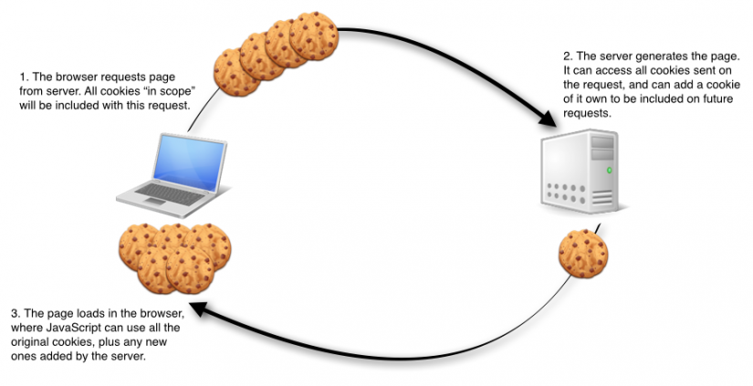

Chém gió time ! Nhưng nó lấy từ nhiều nguồn :v, nguồn được lấy từ nhiều
nơi, nơi cuối là người đọc :D
Như mình đã nói DOM là con của BOM, và trong DOM cũng chứ rất nhiều thuộc tính,
phương thức khác có thể tác động trang web, chúng ta sẽ tìm hiểu cookie trong DOM
( hay bao quát hơn là trong BOM).
- Thế Cookie là gì ?
Cookie là một file dữ liệu được lưu trữ ở mỗi máy client và đối với
mỗi trình duyệt nó sẽ lưu ở một ổ khác nhau, còn về thời gian sống của
cookie có thể là vĩnh viễn hoặc cũng có thể là một thời gian nhất định(
do chúng ta thiết lập).
Vì cookie lưu ở máy của client, nên khi chúng ta tắt trình duyệt thì
cookie vẫn tồn tại nếu như khoảng thời gian sống của nó vẫn còn, điều này
khác so với session. Tuy nhiên vì cookie được lưu trữ ở client nên chúng
ta cần phải cân nhắc kỹ trước khi sử dụng nó( bảo mật ).

- Cách cookie làm việc
SERVER của bạn gửi một số dữ liệu tới trình duyệt người dùng một mẫu
dạng cookie. Trình duyệt chấp nhận cookie đó. Nếu chấp nhận, nó được lưu
như là một bản ghi thuần văn bản trên phần cứng khách hàng truy cập. Bây
giờ, khi khách hàng truy cập đến một trang khác trên site của bạn , trình
duyệt gủi cookie như thế tới Server để thu hồi. Khi được thu hồi, Server
của bạn biết/nhớ những gì đã lưu trước đây.

Các cookie là bản ghi dữ liệu thuần văn bản của 5 trường biến:
1.Expires − Ngày cookie sẽ hết hạn. Nếu nó để trống, thì cookie sẽ
hết hạn khi khác truy cập thoát khỏi trình duyệt.
2.Domain − Tên miền của site người dùng.
3.Path − Đường truyền tới thư mục hoặc trang web mà thiết lập cookie.
Nó có thể là trống nếu bạn muốn thu nhận cookie từ bất kỳ thư mục hoặc trang nào.
4.Secure − Nếu trường này chứa từ “secure”, thì khi đó cookie chỉ có
thể được thu nhận với một Server an toàn. Nếu trường này là trống, sẽ
không có giới hạn nào.
5.Name=Value − Cookie được thiết lập và được thu nhận trong form các
cặp khóa-giá trị (key-value).
var COOKIE_NAME = "example cookie"; /* The cookie's name */
var COOKIE_VALUE = "Hello, world"; /* The cookie's value */
var COOKIE_PATH = "/foo/bar"; /* The cookie's path */
var COOKIE_EXPIRES; /* The cookie's expiration date */
/* Thiết lập hết hạn cho Cookie bằng 1 phút trong tương lai ( 60000ms = 1minute). */
COOKIE_EXPIRES = (new Date(Date.now() + 60000)).toUTCString();
document.cookie += COOKIE_NAME + "=" + COOKIE_VALUE + "; expires=" + COOKIE_EXPIRES + "; path=" + COOKIE_PATH;